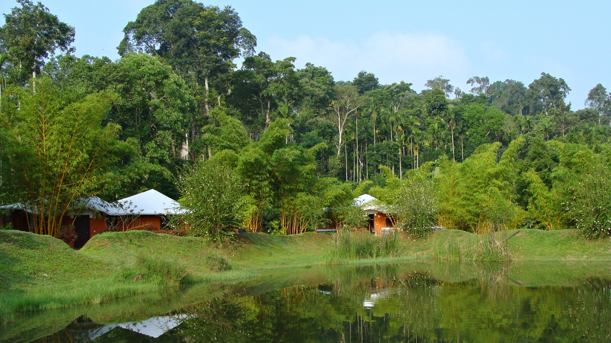
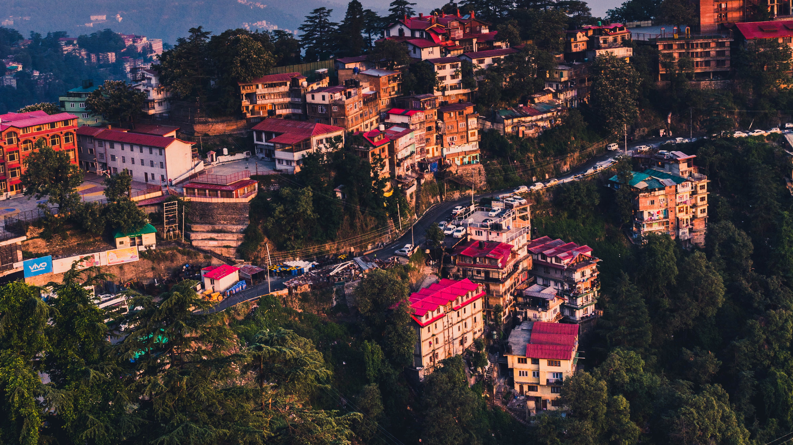
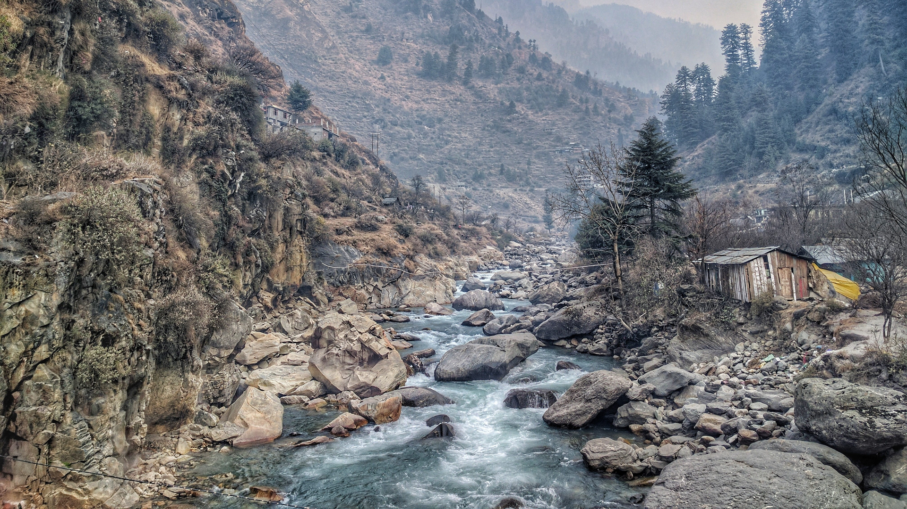

One of the most popular hill stations in Himachal, Manali offers the most magnificent views of the Pir
Panjal and the Dhauladhar ranges covered with snow for most parts of the year.
With the Covid-19 pandemic going on, Manali has evolved to be a place loved by young people looking for
longer stays for workation. With ambient cafes, good wifi availability, small eateries and convenient
shops,
Old Manali is among the favorite neighbourhood for such people.
2.Leh Ladakh
Ladakh is a union territory in the Kashmir region of India. Formerly falling in the state of Jammu &
Kashmir, Ladakh was administered a union territory on 31st October 2019. Extending from the Siachen
Glacier to the main Great Himalayas, Ladakh is a land like no other. Dominated by dramatic landscapes,
Ladakh is known as the world's coldest desert.
3.coorg

Located amidst imposing mountains in Karnataka with a perpetually misty landscape, Coorg is a popular
coffee
producing hill station. It is popular for its beautiful green hills and the streams cutting right
through
them. It also stands as a popular destination because of its culture and people. The Kodavas, a local
clan
specializing in martial arts, are especially notable for their keen hospitality.
3.Shimla

Shimla is the capital of Himachal Pradesh and a popular hill-station among Indian families and honeymooners. Situated at the height of 2200m, Shimla was the summer capital of British India. Shimla still retains its old-world charm with beautiful colonial architecture, pedestrian-friendly Mall Road and the ridge lined up with multiple shops, cafes and restaurants.
4.Kasol

Kasol is a quaint little village in Himachal situated along the banks of the river Parvati. Commonly known as the 'Amsterdam of India', Kasol is a tourist attraction that is rapidly gaining fame as a popular hub for trekkers, backpackers, and nature lovers. Kasol is situated 23 kms from Bhuntar and next to the religious town of Manikaran and is one of the best places in the country just to sit back and chill in the panorama of snow-clad mountains, pine trees and gurgling river.
.
5.Golden Temple
One of the most spiritual places in India, the Golden Temple, also known as Sri Harmandir Sahib, is the holiest shrine in all of Sikhism. Located right in the heart of Amritsar, the stunning golden architecture of the temple and the daily Langar (community kitchen) attract a large number of visitors and devotees each day. The temple is open to devotees of all faiths and serves over 100,000 people free food from all walks of life.